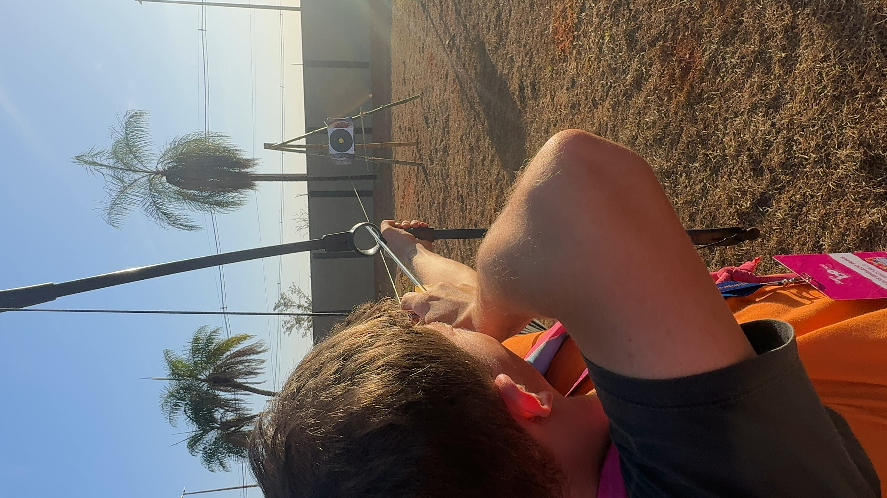

Pessoal
Gosto de me reinventar, explorar ideias e transformar conhecimento em prática. Sou curioso e gosto de ver tudo funcionando na vida real. Minha jornada pessoal é marcada pela busca constante por crescimento e descobertas.
Quem Sou Eu
Me chamo Carlos Eduardo Braga, mas todos me conhecem como Cadu. Sou uma pessoa que sempre busca se reinventar e explorar novos horizontes. Minha curiosidade natural me leva a questionar como as coisas funcionam e buscar maneiras de melhorá-las.
Desde cedo, desenvolvi uma paixão por entender o mundo ao meu redor. Seja através da tecnologia, da ciência ou das relações humanas, sempre busco conectar diferentes áreas do conhecimento para criar soluções inovadoras.
Minha Filosofia de Vida
Acredito que o conhecimento só tem valor quando é aplicado na prática. Por isso, sempre busco transformar o que aprendo em ações concretas que possam fazer a diferença na vida das pessoas e no mundo ao meu redor.
Minha abordagem é baseada em três pilares fundamentais:
- Curiosidade: Sempre questionar e buscar entender o porquê das coisas
- Praticidade: Transformar ideias em soluções reais e aplicáveis
- Inovação: Buscar maneiras criativas de resolver problemas
Valores Pessoais
Valorizo muito a honestidade, a transparência e o respeito nas relações humanas. Acredito que a comunicação clara e direta é fundamental para construir relacionamentos duradouros e produtivos.
Também considero essencial manter um equilíbrio entre trabalho e vida pessoal. Acredito que o sucesso profissional só é verdadeiro quando acompanhado de bem-estar pessoal e relações saudáveis.
Desenvolvimento Pessoal
Estou sempre em busca de crescimento pessoal e profissional. Participo de cursos, workshops e eventos que me ajudam a desenvolver novas habilidades e expandir minha visão de mundo.
Gosto de ler sobre diferentes temas, desde tecnologia e ciência até filosofia e psicologia. Acredito que a diversidade de conhecimento nos torna pessoas mais completas e capazes de enfrentar os desafios da vida.